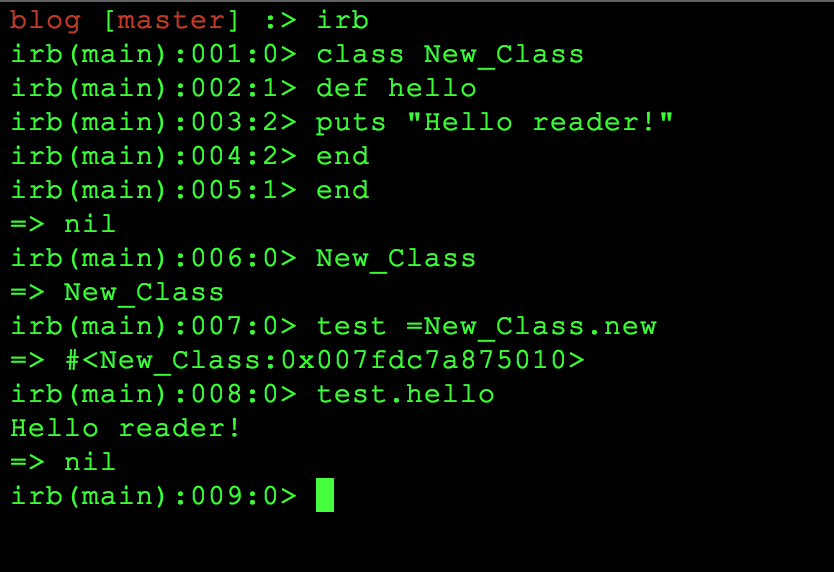
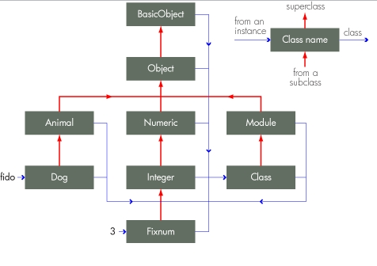
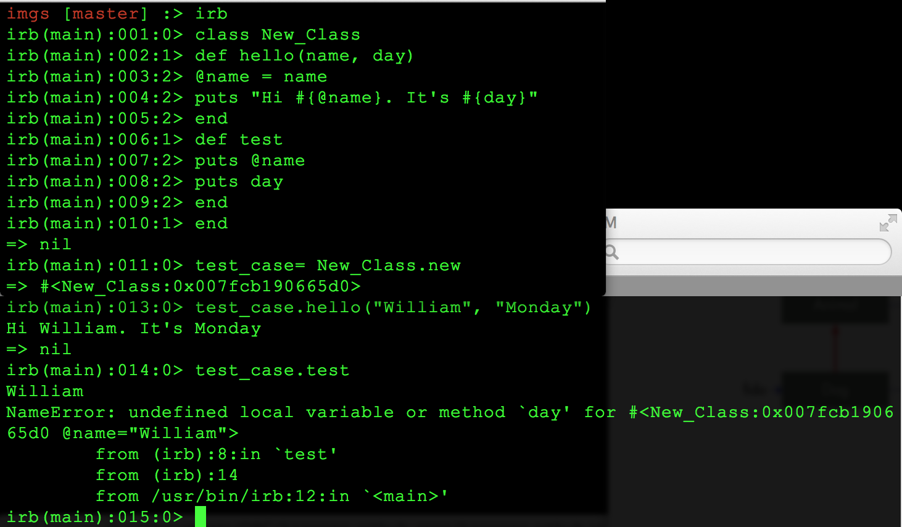

Ruby Classes
11/8/14
What are classes?
Classes in Ruby are created as first class objects where they are instances of the class Class. A class is usually defined by type class CLASS_NAME_HERE ( additional methods here ) end. Let's try it in IRB.

Here's what's happening in the picture above.
1) Class called New_Class is created.
2) Inside New_Class, an instance method called hello is created.
3) Inside the hello instance method, a greeting will be displayed when the method is called.
4) The variable, test, is set equal to the class, New_class. This creates test as an object of New_Class.
5) I can now call the Hello method within the New_Class class which will puts a friendly greeting into the prompt!
Here's another handy dandy picture of class hierarchy all thanks to Nick Morgan.

Instance Variables
Instance variables are extremely awesome. These variables are easily recognized because they have a @ before the name of the variable. For example, @test is an instance variable! An instance variable differs from your standard variables because it can be accessed across methods within your class hierarchy. Say you needed a value stored in the variable in the initialize method of the class. Just make it an instance variable. It might be easier to see it than to imagine it. Check it out in IRB.

1. New_Class has been created.
2. Method hello is defined with 2 arguments, name and day.
3. Instance Variable @name is set equal to the input argument name.
4. Method will puts string with instance variable @name and input argument, day.
5. Method test is defined with no arguments.
6. Method will puts whatever is in instance variable @name from hello method. Also, method will puts variable day.
7. Test_case is now set equal to New_Class and initialized.
8. Calling the method hello on the new object test_case and passing the arguments William and Monday, the method outputs the string to the prompt. It works as expected.
9. Test method is called on object test_case.
10. Instance Variable @name is called and outputs William from the previous method as expected.
11. Method tries to output the variable day, there is an error.
12. Day was not made an instance variable so it is treated as an local variable.
In this case, local variable day was NEVER defined in THIS method. Interesitng huh?